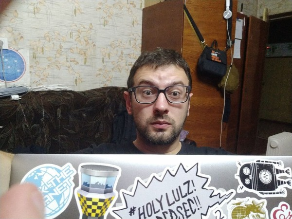

Klimenko/Tsikunkov Maxim Sergievich
IT administrator and GNU/Linux Demonic Space Pirate ( ! online ). And sometimes a cloud infrastructure engineer | | If you ask me, I don't allow Scientology people and cybercriminals to use me and my work, but who asks... and by the way, I use Arch Linux. These days we can find criminals and slave traders in the police departments, the army or other government agencies (like the SBU), and these people can be in scientology or with another dangerous point of view on your life ... Like piracy and "hackers ", army creathure, who decide to play in you, pseudo hackers or just fucking criminals, from the Mirgorod part and the other parts of the cult, otherwise it can not be called, as for me piracy (Real piracy or the first numbers in pirate networks) is the same dangerous and destructive cult as some others, they can directly control the cities. And they try to control me like an electromagnetic disruptor drives away a crowd of birds, they do it every day. Which of the "super-genius" people gives a job in the police or the army to such?.....
I want to apologize to the modern, non-criminal and normal members of the Scientology or other religious society, this is not about you. And I never want to apologize to the Ukrainian army, the police, the government and the fucking creatures from the SBU. Because it looks like these fucking creatures sold me to Scientology for using me like a tool when I was in elementary school. I am not a Scientologist and certainly will not be one myself and never was. In the meantime, our security forces and special services are using electromagnetic weapons to surprise the girl/boy and get her/him into bed. They so cool and powerfull, they can push Linus to creating absolutely windows like Linux. But I see by my eays how they brainwash my mother ... people from local police and other fucking creathures and "frends" - think is releted to forced transfer of property.
Stupid assholes decide to take me into slavery and share my whole life from everyday life with Ukrainian unofficial "Scientologists", they work on brainwashing me, as before, but with nuances from Aum Shinrikyo. And they can also steal a passport from the e-government for Ukraine and ..... but this is not the main reason for falling into slavery, here they publicly respect traffickers and do not recognize the rights of the person they have chosen and come up with reasons for this. And I, after 2 years of electromagnetic burning, feel like in a prison with a dead brain ... But all this time I just live in my house with my grandfather and work in IT.
- I can publish one variant then, after days,
- remember something an update all site :)
Author on photo:
